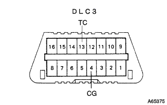
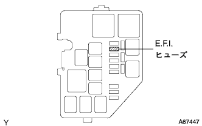

EFI System Diag Code Inspection / Erase |
Confirm that the throttle valve is fully closed.
Make the shift position in N range or P range.
Turn off the air conditioner.
Connect Tascan to DLC3.
The operation is performed according to the screen display, displayed the [Diagnosis] → [Mode] screen, selects normal mode or check mode, and checks the diagnostic code.
|  |
Turn off the ignition switch.
Use the diagnodes check wire No.2 to shorten the DLC3 13 (TC) ← → 4 (CG) terminal.
Turn on the ignition switch and read the number of flashing of the check engine warnin glamp.
Remove the diagnodes check wire No.2.
The operation is performed according to the screen display, and the [Diagnosis] → [Diag Code Freeze Data] screen is displayed and the diagnostic code is erased.
|  |
E.F.I. Hughes (15A) remove and connect the fuse after 15 seconds or more.